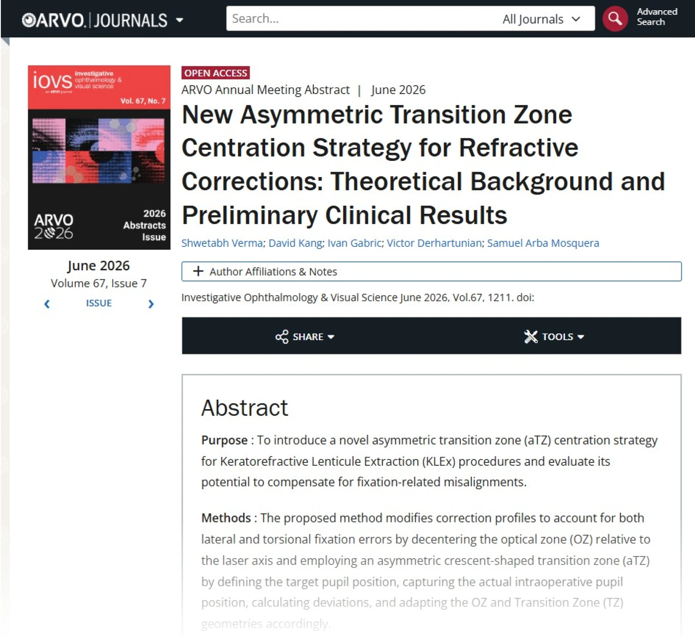

아이리움안과 강성용 원장이 공동저자로 참여한 정밀 시력교정술 연구가 지난 5월 열린 2026 ARVO Annual Meeting에서 발표됐으며, 해당 연구 초록이 IOVS 2026년 6월 ARVO Abstracts Issue에 게재됐습니다.
이번 연구는 스마일수술과 같은 각막 렌티큘 추출 방식 시력교정술(KLEx)에서 발생할 수 있는 미세한 중심 이탈과 눈의 회전 오차를 보정하기 위한 새로운 비대칭 전이부 중심화 전략(aTZ)을 다뤘습니다.

아이리움안과 강성용 원장이 공동저자로 참여한 정밀 시력교정술 연구가 지난 5월 열린 2026 ARVO Annual Meeting에서 발표됐으며, 해당 연구 초록이 IOVS 2026년 6월 ARVO Abstracts Issue에 게재됐습니다.
이번 연구는 스마일수술과 같은 각막 렌티큘 추출 방식 시력교정술(KLEx)에서 발생할 수 있는 미세한 중심 이탈과 눈의 회전 오차를 보정하기 위한 새로운 비대칭 전이부 중심화 전략(aTZ)을 다뤘습니다.

굴절교정을 위한 새로운 비대칭 전이부 중심화 전략
연구 개요
연구 요약
시력교정술에서 중요한 것은 근시·난시 도수를 교정하는 것만이 아닙니다. 레이저가 환자의 눈에서 어느 위치를 중심으로 적용되는지, 수술 중 시선 고정이나 눈의 미세한 회전이 어떻게 반영되는지도 수술 설계에서 중요한 요소가 될 수 있습니다.
이번 연구에서 소개된 aTZ 전략은 중심부 광학부는 목표 치료 중심에 맞추고, 주변부 전이부는 환자의 눈 위치 차이에 따라 비대칭으로 조정하는 방식입니다.
이를 통해 중심부 광학 품질을 유지하면서도, 시선 고정 오차와 회전 오차로 인한 중심 이탈을 보정할 수 있는 이론적 가능성을 제시했습니다.
연구의 의미
이번 연구는 스마일수술을 포함한 시력교정술을 단순한 도수 교정이 아니라, 환자 개개인의 눈 구조와 시선 특성까지 고려하는 정밀 시력교정 설계로 바라본다는 점에서 의미가 있습니다.
특히 스마트노바(CenTrax/SMART NOVA)는 수술 중 렌티큘 중심 위치를 객관적으로 확인하고 보정할 수 있는 방법을 제공한다는 점에서, 향후 렌티큘 기반 시력교정술의 정밀도 향상에 기여할 수 있습니다.
아이리움안과는 국제 학술 연구를 바탕으로, 환자 개개인의 눈 상태에 맞춘 맞춤형 정밀 시력교정을 위해 지속적으로 연구와 임상 적용 가능성을 검토하고 있습니다.
Q 스마트노바는 일반 스마일과 무엇이 다른가요?
스마일, 스마트노바와 같은 각막 렌티큘 추출 방식 시력교정술에서 발생할 수 있는 미세한 중심 이탈과 눈의 회전 오차를 보정하기 위한 새로운 비대칭 전이부 중심화 전략을 다룬 연구입니다.
Q aTZ 전략이란 무엇인가요?
aTZ는 중심부 광학부는 목표 치료 중심에 맞추고, 주변부 전이부는 눈의 위치 차이에 따라 비대칭으로 조정하는 개념입니다.
Q 스마일수술에서 중심 정렬이 중요한 이유는 무엇인가요?
시력교정술에서는 도수 교정뿐 아니라 레이저가 눈의 어느 위치를 중심으로 적용되는지도 중요할 수 있습니다. 중심 정렬은 환자별 눈 구조와 시선 특성을 고려한 정밀 설계와 관련됩니다.
Q 아이리움안과의 어떤 수술과 관계있나요?
본원에서 시행 중인 스마트노바의 CenTrax 기술은 수술 중 렌티큘 중심 위치를 객관적으로 확인하고 보정할 수 있는 방법을 제공해 렌티큘 기반 시력교정술의 정밀도 향상에 기여할 수 있습니다.
Q 모든 환자에게 적용되나요?
아닙니다. 각막 상태, 도수, 난시 방향, 동공 크기, 시선 고정 특성 등을 정밀검사한 뒤 의료진의 판단에 따라 적용 가능성을 검토해야 합니다.